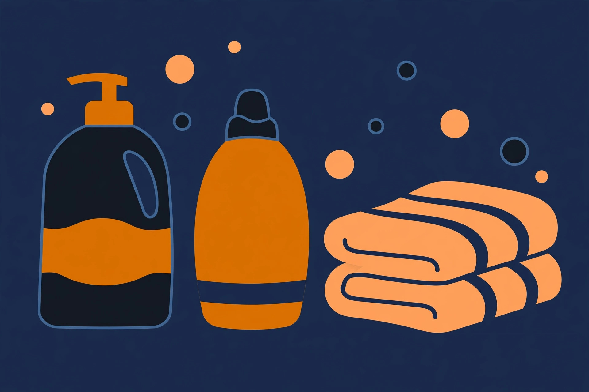
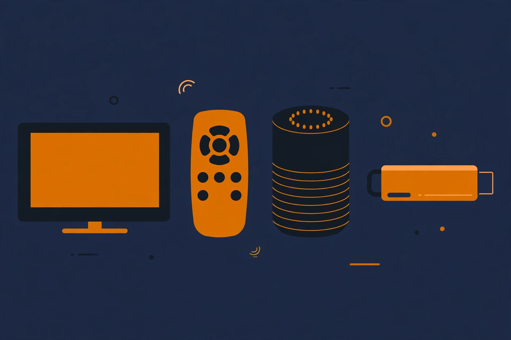
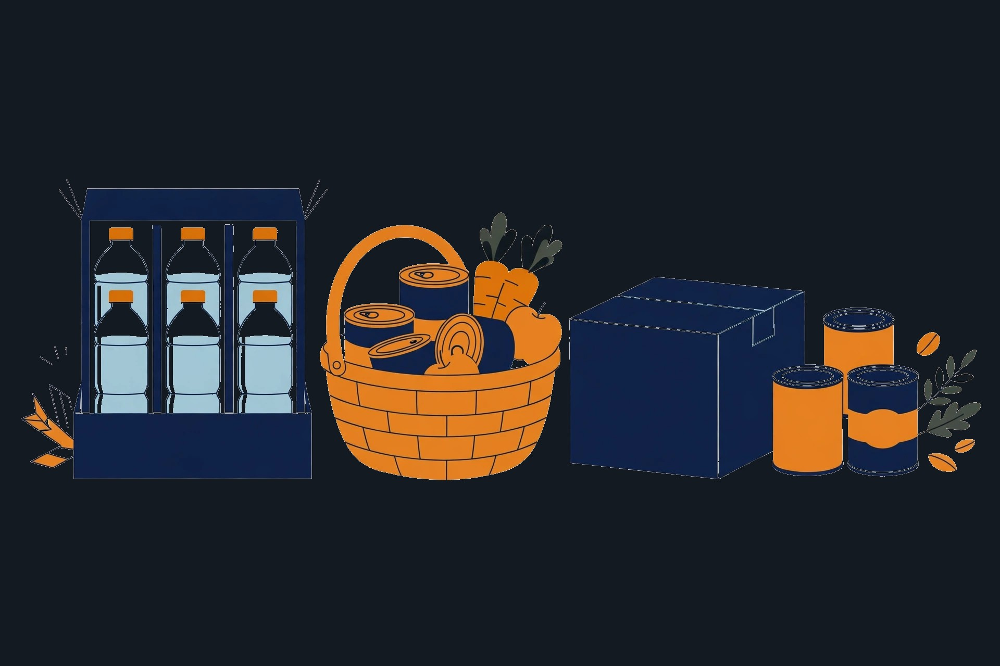
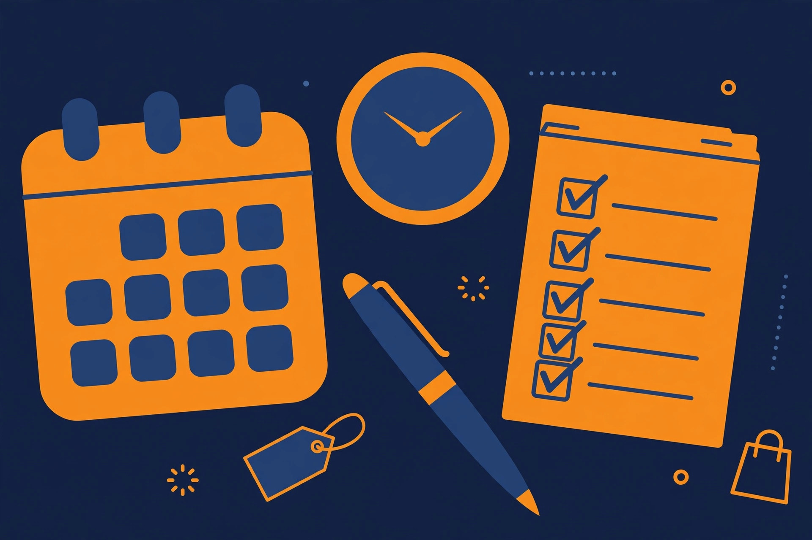

本セールの数日前から始まる前哨戦。対象は限られますが、売り切れやすい日用品・食品の買い置きはここで済ませるのが安全です（昨年の例）。
対象商品が一気に広がる本番。家電・ガジェットなど単価の高いものは、こちらの対象発表を見てから判断します。
期間中の買い物に追加のポイント還元が付く仕組み。事前エントリーが必須で、上限ポイントも決まっています。買い物の前に、必ずエントリーと上限の確認を。
商品ページにクーポンが付いている場合、購入手続きの画面で適用されます。セール価格と併用できるかどうかは商品ごとに違うため、リンク先で確認してください。
※ 仕組みの説明は例年の形をもとにしています。今年の条件は11月19日の公式発表で確認し、このページに反映します。
今年は、カテゴリへの案内だけでなく、具体的な商品を名前で置きます。価格は変動するので載せません。代わりに「なぜこれを狙うのか」の理由を書きました。セール対象かどうかは、11月19日の発表を受けてこのページで照合し、対象外だったものは差し替えます。

毎日使う消耗品の代表格。大容量の詰め替えは1回あたりの単価が下がりやすく、セールの買い置きと相性がいい洗剤です。「無菌レベルの消臭力」をうたう花王の主力で、部屋干し用に寄せた設計。香りはリーフィブリーズ（微香）です。ドラム式には専用タイプがあるので、注文前に型だけ確認を。
柔軟剤の大容量詰め替え。名前のとおり「着たあとのニオイ戻りを1週間抑える」が売りの系統で、洗剤と合わせて買い置きしやすい組み合わせです。まとめ買いで単価を下げるタイプの商品なので、セールの照合対象に入れました。

ブラックフライデーで毎年主役級になるAmazonデバイス。スティック型で最もパワフルなモデルで、Wi-Fi 6E対応・容量16GB。レビューは7,600件超（11月11日時点の表示）。テレビで動画配信を観る環境を、セールで一気に整える狙いです。
スマホ約2回分の10,000mAhに、最大25W出力と3ポートを詰めた現行モデル。USB-Cで入出力できるので、ケーブルを増やさずに済みます。年末の帰省・旅行シーズンの前に1台、がカイカタの見立てです。

レビュー4.6万件のケース買いの定番。ラベルレスなので、捨てるときのひと手間が減ります。水は重くてかさばるぶん、セール価格＋自宅配送の組み合わせが効くジャンルです。防災用の備蓄を兼ねるなら2ケース目も。
原料はホエイ100%の、明治の定番プロテイン。1kgの大袋は単価が下がりやすいので、セールで照合する価値がある商品です。毎日飲むものほど、買うタイミングの差がそのまま効きます。
※ 上の6点は「今年カイカタが狙うもの」です。セール対象の確定は11月19日の公式発表後、このページで更新します。
| 項目 | 2025年（実績） | 2026年 |
|---|---|---|
| 先行セール | 11月21日〜23日 | 未発表（11月19日に公開） |
| 本セール | 11月24日〜12月1日（8日間） | 未発表（11月19日に公開） |
| ポイントアップ | 実施（エントリー制・上限あり） | 公式発表で確認します |
| この特集の更新 | — | 発表当日中に今年の欄を埋めます |

セールページでポイントアップにエントリー。買い物の前であることが条件です。
消耗品リストと本命の型番を、セール前にメモしておくと衝動買いが減ります。
商品ページのセール表示とクーポンの有無を見てからカートへ。
還元の上限ポイントと、セールの終了時刻を最後に確認してから購入します。